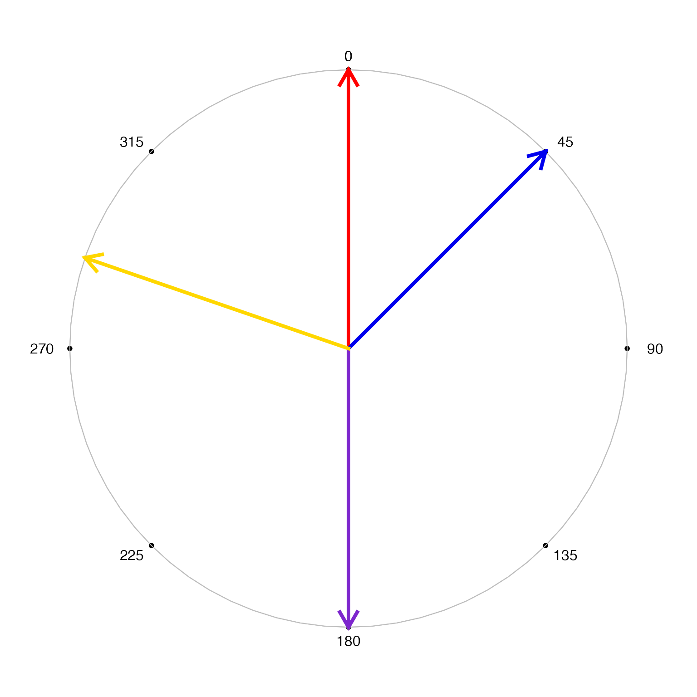
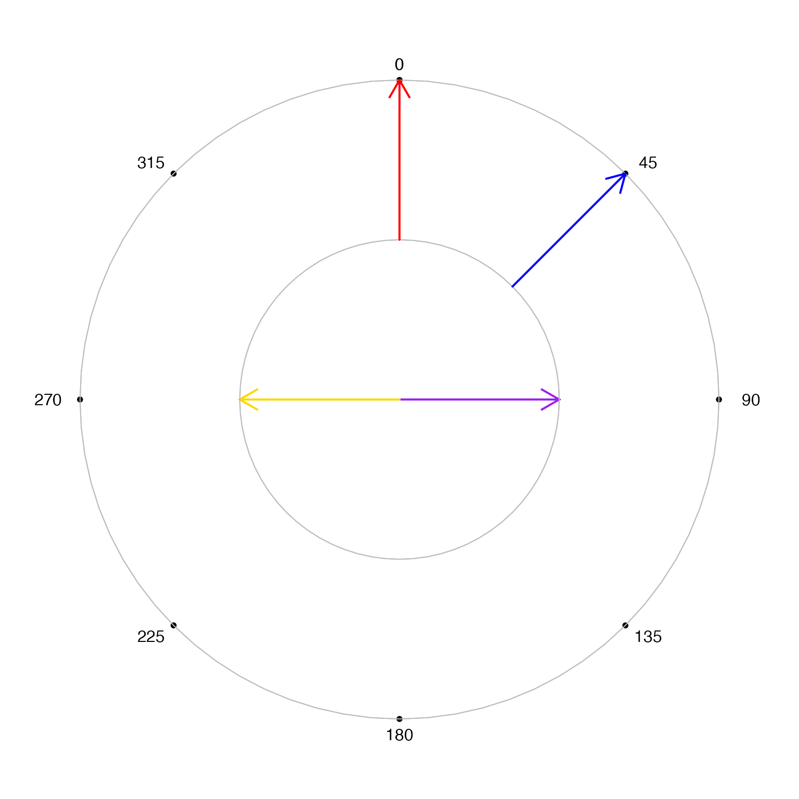
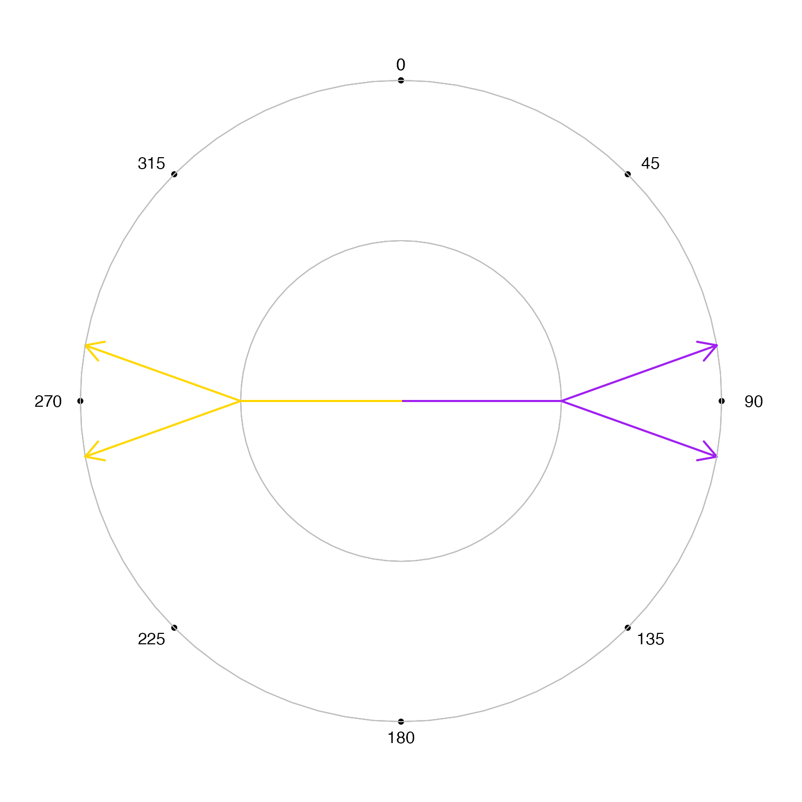

Display degree angles around a unit circle
display_degrees(
x,
x2 = x,
add = FALSE,
col = "darkorange",
lwd = 2,
top_degree = 0,
clockwise = TRUE,
r1 = 0,
r2 = 1,
r0 = 1,
arrow.length = 0.2,
xlim = NULL,
ylim = NULL,
asp = 1,
...
)numeric angles in degrees
numeric angles in degrees, optionally used to show
when an angle changes from x to x2.
logical indicating whether to add to an existing open
plot device.
character vector of colors recycled to length(x).
numeric line width.
numeric the angle in degrees for the top
(12 o'clock) position of the graph.
logical indicating whether angles proceed from
the top_degree in clockwise (top, top-right, right, bottom-right,
bottom, bottom-left, left, top-left, top) or counter-clockwise
orientation.
numeric radius values for the start and end position
of each arrow vector drawn.
numeric radius used for the axis with labeled angles.
numeric passed to arrows() to define the
arrow head length.
numeric x-axis and y-axis plot limits, respectively.
When not supplied, they automatically use 1.1 times the higher
value from c(r1, r2, r0, 1) so that the minimum radius is at
at least 1 unless specified otherwise.
additional arguments are ignored.
Other colorjam hue warp:
add_colorjam_preset(),
add_colorjam_step(),
adjust_hue_warp(),
approx_degrees(),
colorjam_presets(),
colorjam_steps(),
h2hwOptions(),
h2hw(),
hcl_to_hsl_hue(),
hsl_to_hcl_hue(),
hw2h(),
mean_angle(),
plot_colorjam_preset(),
remap_colorjam_preset(),
validate_colorjam_preset()
display_degrees(c(0, 45, 180, 289),
lwd=4,
col=c("red", "blue2", "purple3", "gold"))

display_degrees(c(90, 270), col=c("purple", "gold"), r1=0, r2=0.5)
display_degrees(c(0, 45), col=c("red", "blue"), r1=0.5, r2=1, add=TRUE)

display_degrees(c(90, 270), col=c("purple", "gold"), r1=0, r2=0.5,
arrow.length=0)
display_degrees(c(90, 270), x2=c(100, 280), col=c("purple", "gold"),
r1=0.5, r2=1, add=TRUE)
display_degrees(c(90, 270), x2=c(80, 260), col=c("purple", "gold"),
r1=0.5, r2=1, add=TRUE)
